Otake, Hiroshima: things to do, food and stays
Otake · Hiroshima
Otake
Highlighted on the Hiroshima map.

Stay
Simose Art Garden Villa
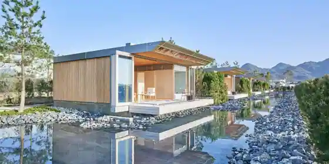
Simose Art Garden Villa
サンホテル大竹
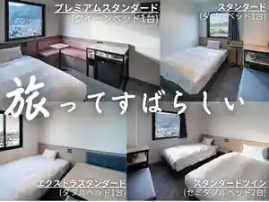
San Hotel Otake
Dining
SIMOSE French Restaurant
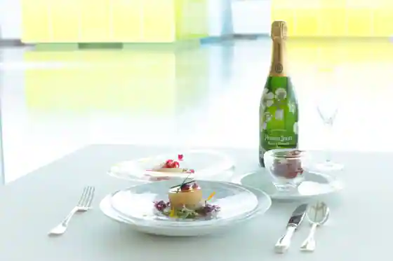
SIMOSE French Restaurant
お食事処 みずなか
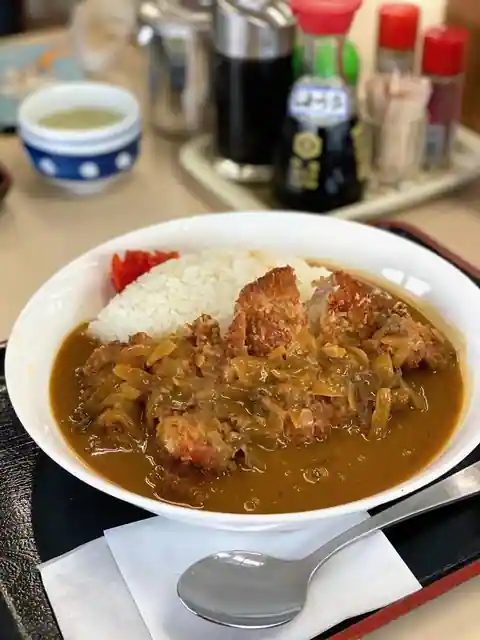
O Shokuji Tokoro Mizunaka
ラーメン階杉 ゆめタウン大竹店
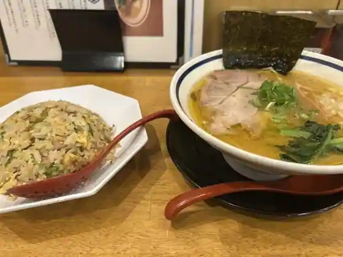
Ramen Kai Sugi Yume Town Otake
ミュージアムカフェ
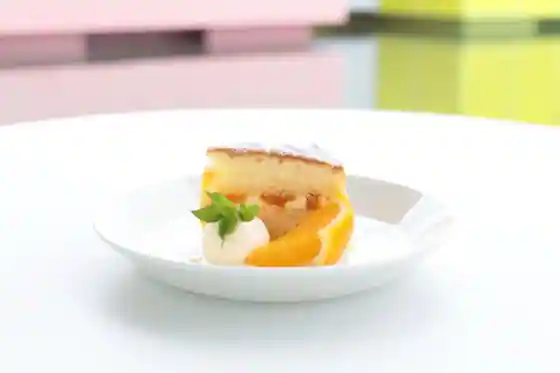
Myujiamu Cafe
ラーメン食堂 寅
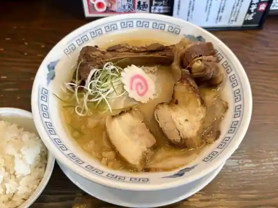
Ramen Shokudo Tora
コペイカ 大竹駅前店
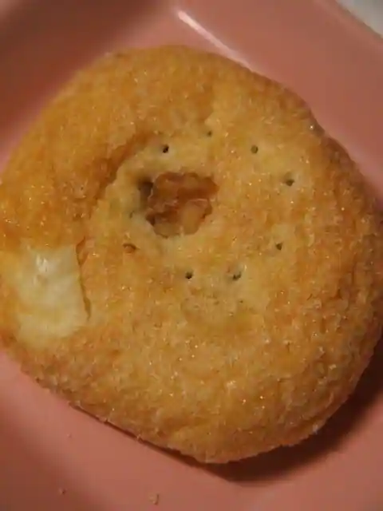
Kopeika Otake Ekimae
駅前食堂
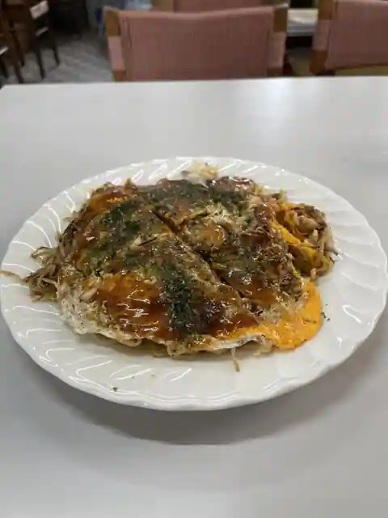
Ekimae Shokudo
アイーンズ
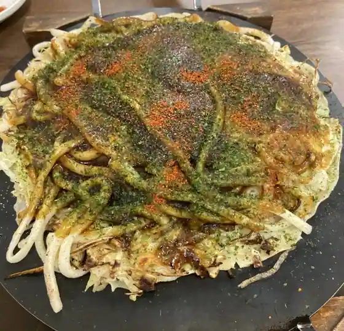
Ainzu
やまぐちレストラン
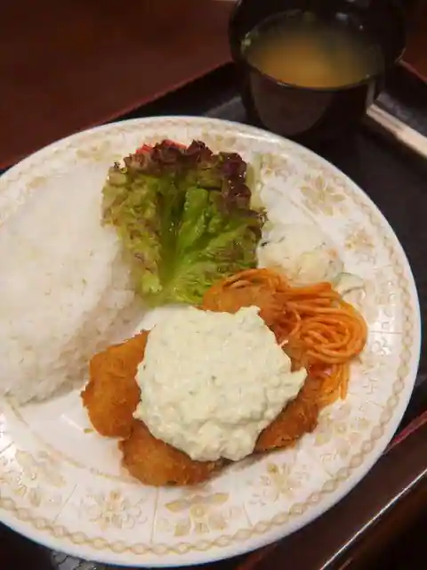
Yamaguchi Restaurant
鑫旺
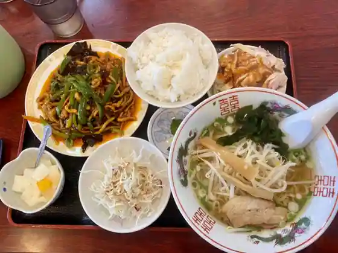
Local spot
どんどん ゆめタウン大竹店
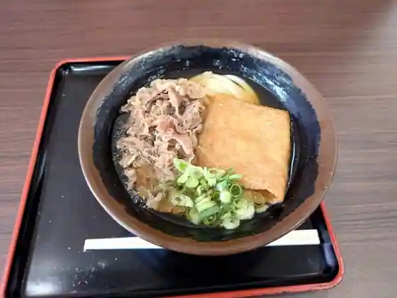
Dondon Yume Town Otake
栄軒
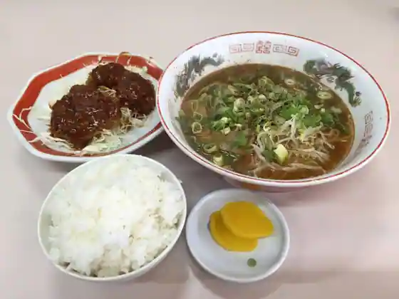
Sakae Ken
ユイット
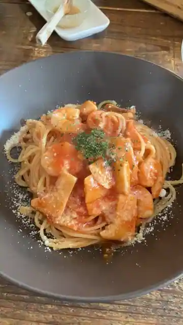
Yuitto
Les gouters gaku
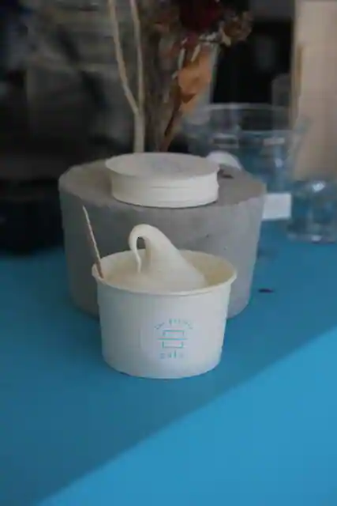
Les gouters gaku
おこのみ村
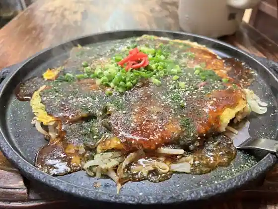
Okonomi Mura
日本料理 魚池
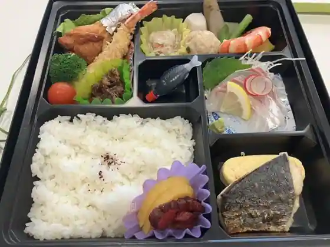
Nihonryori Sakana Ike
本格焼肉 韓韓
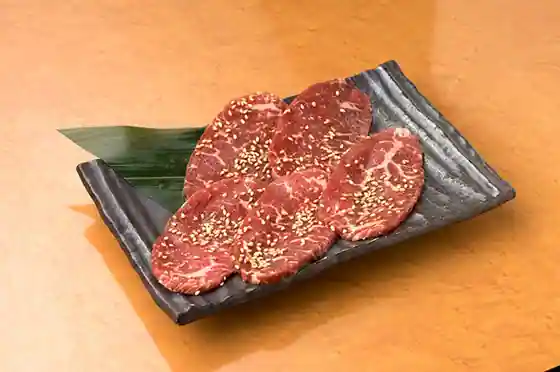
Honkaku Yakiniku Kan Kan
中国料理 鳳凰
Chugokuryori Hoo
小西お好み焼き店
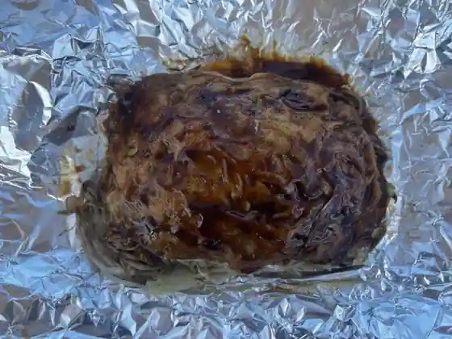
Konishi O Konomi Yaki
patisserie Oga
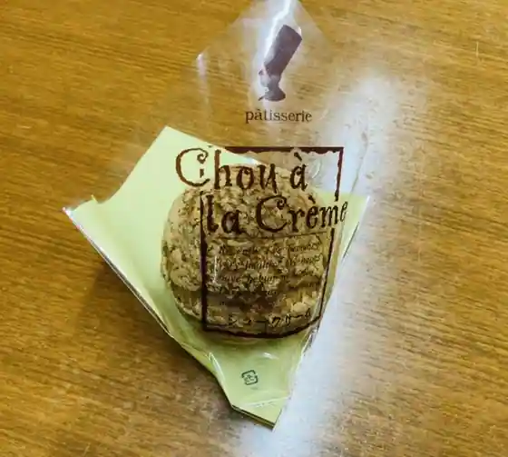
patisserie Oga
居酒屋・泰心
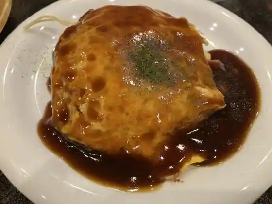
Izakaya Yasushi Kokoro
やまちゃん
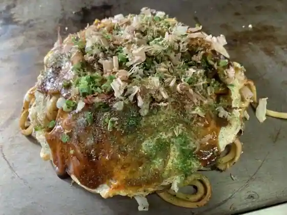
Yamachan
礼ちゃん
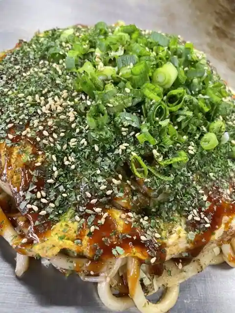
Rei Chan
小料理 かず
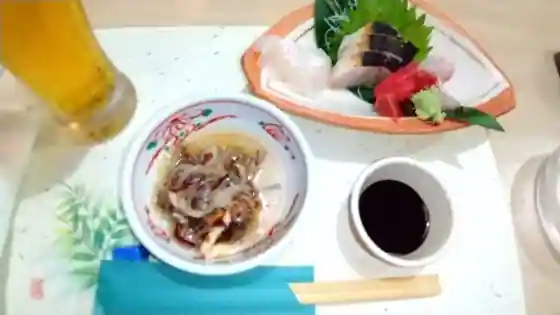
Koryori Kazu
Sights
Kame Kyo Park

Otake Eki

Shimose Art Museum

Mikura Gaku

Ata Tajima